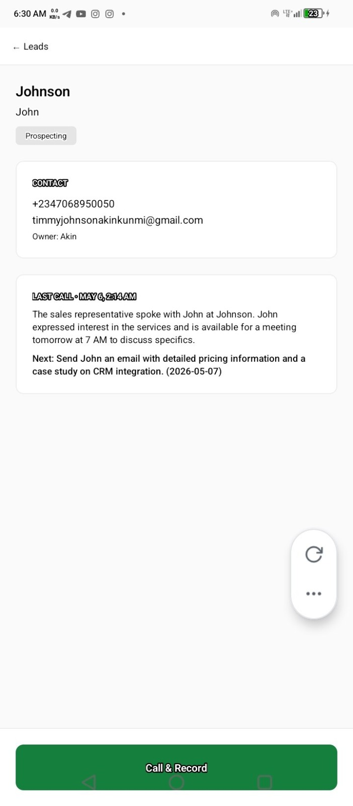
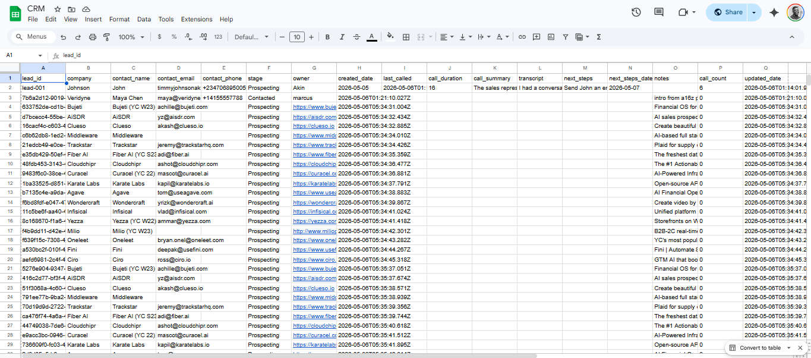
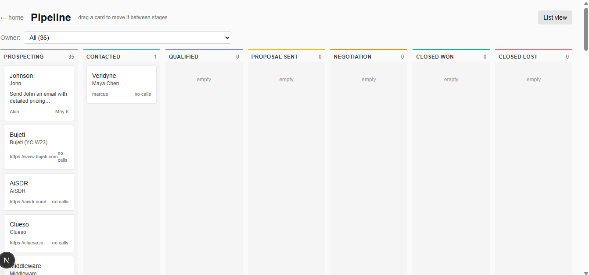

SDR CRM, RevOps Build
Logging calls always broke my flow. So I built a CRM that does it for me, in one day, for $65 a month.
You hang up, you are in the zone, and then you have to stop, open your CRM, type your notes, set a follow up. By the time you are done you have lost momentum. SDR teams pay $750+/month for Salesforce to enforce that exact friction. This is the production-grade alternative, built around the second after a call ends, not the dashboard view.
1. The Problem
I have been an SDR and AE for years. The thing that always broke my flow was logging calls. You hang up, you are in the zone, and then you have to stop, open your CRM, type your notes, set a follow up. By the time you are done you have lost momentum.
The bloat in $750/month CRMs is not a feature problem. It is a friction problem. They are designed for the dashboard view, not for the second after the call ends.
2. What I Built
A full CRM, built in one day using Claude Code. Google Sheets as the database. A web app for pipeline management. A mobile app for making calls. $65 a month to run. Salesforce for the same team is $750.
- Node.js + Express backend with Google Sheets as the database, atomic writes, schema-aware row updates, no race conditions.
- Next.js web CRM, 7-stage kanban pipeline, lead list, CSV import, real-time Sheets sync.
- React Native mobile app, post-call voice memo to Deepgram transcription to Gemini summary, auto-logged to Sheet in under 10 seconds.
- Full pipeline orchestrator, call happens, SDR records memo, transcript generated, AI summary produced, Sheet updated atomically. End to end, no manual handoffs.
3. The Flow
Open a lead. Tap Call. The phone dialler opens. After the call, tap Record Memo and speak a 20-second summary. Tap Stop and Process.
Deepgram transcribes the memo in under 5 seconds. Gemini summarises, identifies the next step, and suggests a stage update. I tap confirm.
The Google Sheet auto-updates: summary, transcript, next steps, date, call count. I did not type a single word.
4. Hard Problems Solved
- Android suspends microphone during phone calls, redesigned the entire flow to a post-call voice memo model. SDR taps record, summarises in their own words, ships.
- Phone numbers with leading + signs stripped by Google Sheets (treated as formulas), fixed by switching to
RAWinput on the Sheets API. - Gemini hallucinating summaries on empty transcripts, added an empty-transcript guard before the model call.
- API key exposure, the AI key never touches the browser. Next.js Route Handler proxy injects the key server-side, request-by-request.



I did not type a single word. That is the whole point.
- Full-stack JS engineering in a single day, Node, Next.js, React Native, all shipped
- API-first design, Sheets, Deepgram, Gemini, all orchestrated end to end
- Mobile-first product instinct, built for the second after a call ends, not the dashboard view
- RevOps cost discipline, $65/mo, not $750/mo, no functional compromise
I built this in a day, with Claude Code, around the moment after a call ends. I'd build your internal RevOps tools the same way. Most SaaS in your stack is paying tax on capability you could ship in a week with the right operator. I'd find the three line items where that's most true, and replace them with tools your team actually wants to use. Production-grade, not toy versions, but built without the SaaS markup.